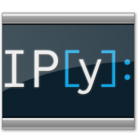

3.2. IPython
{kind=link}
O IPython é um ambiente projetado para Computação Interativa. Um dos aplicativos desse ambiente é o terminal IPython, mostrado na Figura 3.7. Para entrar nesse terminal, você deve ter o ambiente instalado, como por exemplo, através da disribuição Anaconda. No terminal de comandos do seus sistema operacional, shell Linux ou prompt da Anaconda no Windows, entre o comando ipython, como mostrado na figura.
{kind=link}
O prompt do IPython utiliza uma notação diferente da usada no terminal Python, ao invés do tradicional >>>, temos In [N]: (Figura 3.8). Além disso, alguns resultados também apresentam um prompt Out[N]:.
{kind=link}
Repare na Figura 3.9 que as constantes literais numéricas, assim como a função print, são devidamente realçadas nesse terminal. Além disso, ele possui recurso de auto-completar. No exemplo da figura, após o separador ., foi utilizada a tecla TAB para apresentar as opções de métodos disponíveis para o objeto associado ao identificador seq_fibonacci. As teclas de direção (setas) podem ser utilizadas para selecionar a opção desejada.
{kind=link}
O recurso de auto-completar do IPython pode inclusive ser utilizado com expressões mais complexas, como a mostrada na Figura 3.10, onde o elemento 0 da lista L é usado para determinar os métodos disponíveis para o objeto resultante da expressão L[0].

Figura 3.10 - Introspecção de código no terminal do IPython.
Esse terminal do IPython possui alguns comandos úteis para obtenção de mais informações sobre o ambiente e os objetos criados na sessão interativa. A Tabela 3.1 apresenta um resumo desses comandos.
Comando |
Descrição |
|---|---|
|
apresenta informações sobre os recursos do IPython (Figura 3.11). |
|
apresenta uma janela com referências rápidas para os comandos do IPython (Figura 3.12). |
|
acessa o sistema de ajuda da linguagem Python (Figura 3.13). |
|
apresenta detalhes sobre um determinado |
|
apresenta mais detalhes sobre o |
{kind=link}
{kind=link}
{kind=link}
{kind=link}
Figura 3.14 - Detalhando o objeto associado ao identificador seq_fibonacci através do caractere ? no terminal IPython.
{kind=link}
{kind=link}
Portanto, o terminal interativo IPython possui capacidade de destacar símbolos da linguagem Python, possui recursos avançados de auto-completar (tab completion) que inclui introspecção do objeto em questão para determinar atributos e métodos, manutenção do histórico de comandos, capacidade de execução de comandos do sistema operacional integrados com a linguagem, além de forte suporte para visualização interativa e computação distribuída e paralela.
Nota
A documentação do IPython encontra-se disponível em [86].